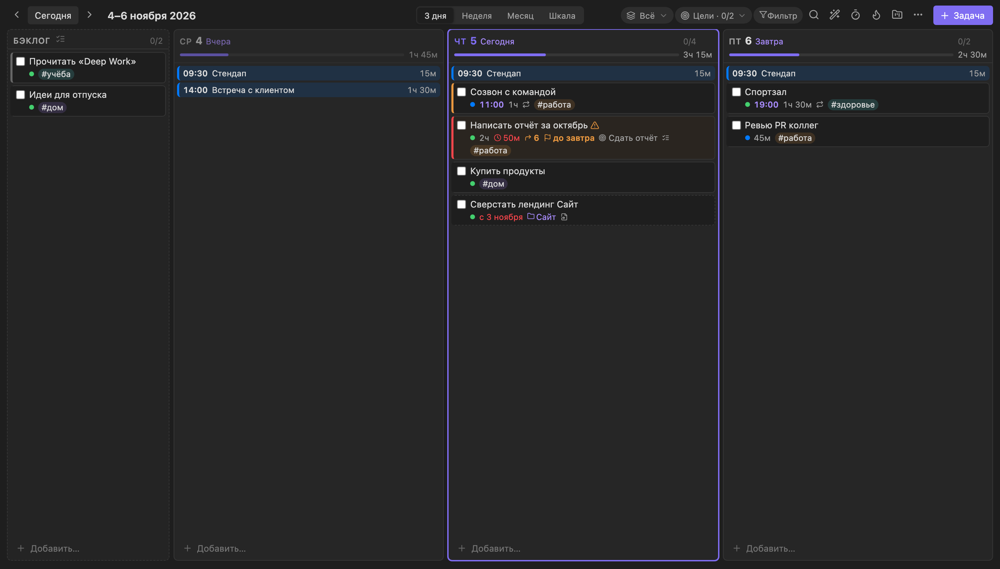

Установка
Четыре шага, всё внутри Obsidian. Удобнее всего открыть эту страницу на iPhone и идти по шагам.
-
Создай хранилище в iCloud iPhone
Именно на iPhone: тогда Obsidian сам положит хранилище в iCloud, и оно появится на всех устройствах.
- Открой Obsidian → Создать новое хранилище, назови, например, «Планер».
- Включи Хранить в iCloud → Создать.
-
Поставь BRAT iPhone
BRAT — установщик из официального каталога Obsidian, он поставит Weekpulse и будет сам его обновлять.
- Настройки›Сторонние плагины›Включить сторонние плагины
- Нажми кнопку ниже, откроется BRAT в Obsidian → Установить›Включить.
Не открылось? В Obsidian: Сторонние плагины›Обзор → найди BRAT.
-
Поставь Weekpulse iPhone
Нажми кнопку — BRAT откроется с уже вписанным адресом плагина. Останется нажать Add plugin.
Вручную, если кнопка не сработала
- Настройки → внизу списка слева BRAT → Add beta plugin.
- Вставь адрес плагина:
ob-volkia/weekpulse- Версию оставь последней, галочку «Enable after installing» не снимай → Add plugin.
Готово, если на панели появились значки календаря, таймера и огонька. Не включился сам — включи Weekpulse в Сторонние плагины.
-
Открой на компьютере по желанию
- Подожди минуту, пока iCloud догрузит папку.
- Открыть папку как хранилище›iCloud Drive›Obsidian›твоё хранилище
- На вопрос про доверие плагинам — «Доверять». Weekpulse и BRAT уже там: они приедут через iCloud.
Что умеет
Подробное описание всех функций — в полной инструкции.



Быстрый ввод одной строкой: Созвон пт 15:00 1ч #работа !! — день, время, длительность, тег и приоритет распознаются сами.
Если что-то не так
Плагин не появился на втором устройстве
Подожди пару минут, пока iCloud догрузит файлы, и полностью перезапусти Obsidian (на iPhone смахни его из списка приложений). Проверь, что на обоих устройствах открыто одно и то же хранилище из iCloud. Не помогло — поставь Weekpulse через BRAT и там (шаги 2–3).
Кнопка «Установить Weekpulse» ничего не делает
Сначала должен быть установлен и включён BRAT (шаг 2). Если всё равно не открывается — поставь вручную по инструкции под кнопкой.
Я уже создал хранилище не в iCloud
Создай новое на iPhone (шаг 1), затем на Mac перенеси в его папку (iCloud Drive → Obsidian) содержимое старого, включая скрытую папку .obsidian — в Finder её показывает Cmd + Shift + точка.
Как обновлять плагин
Ничего делать не нужно: BRAT проверяет обновления при каждом запуске Obsidian. Вручную — палитра команд → «BRAT: Check for updates to all beta plugins». Задачи и настройки не трогаются.
Синхронизация зависла
Первым делом проверь, не закончилось ли место в iCloud.
У меня нет iPhone
Создай хранилище прямо на компьютере и поставь плагин шагами 2–3. Для синхронизации подойдёт Obsidian Sync или Syncthing.